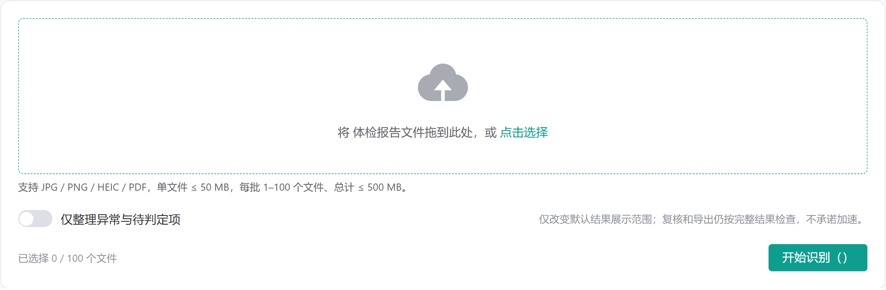
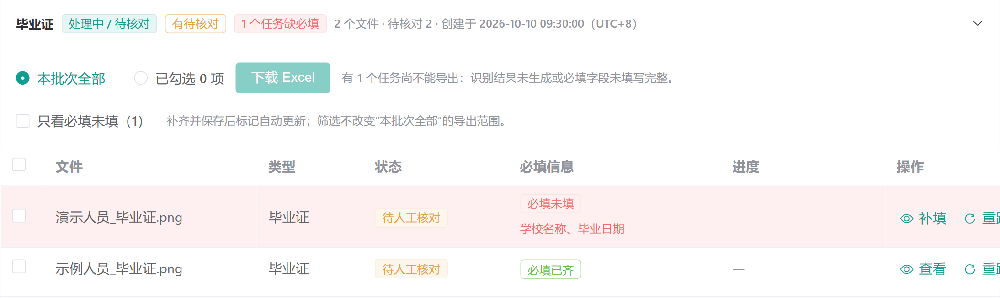
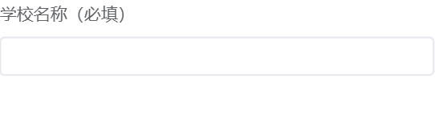
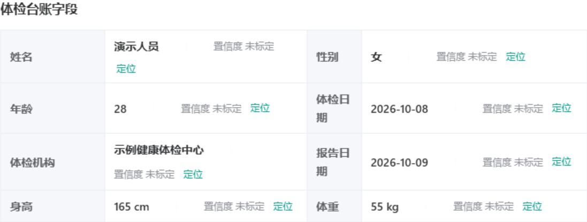
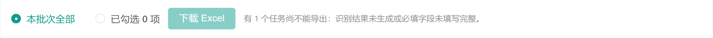
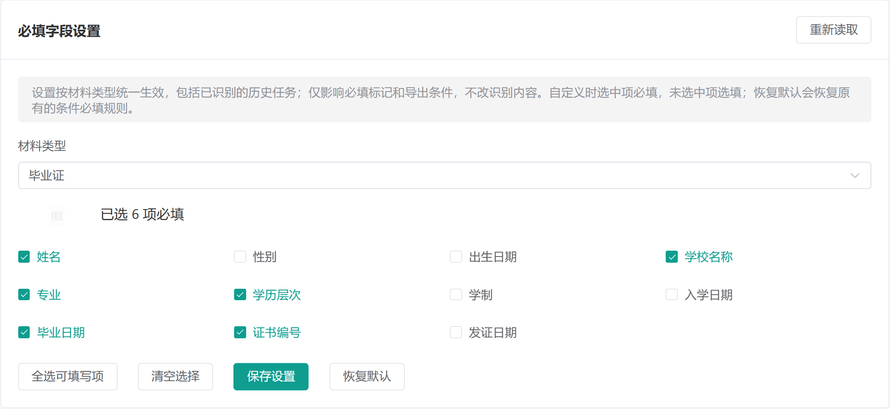

使用说明
按左侧目录查找操作步骤。工作台保留在原标签页，阅读说明不影响正在填写的内容。
本说明介绍如何将证件照片、学历材料和体检报告整理成可下载的 Excel。系统先识别，人工再核对；认不清的内容可以对照原件补填。体检异常的解释和是否录取，由人工按公司制度处理。
第一次使用照这六步做
登录
打开管理员提供的网址，输入自己的账号和密码。
选类型
在“上传识别”选择毕业证、银行卡、体检报告等对应类型。
传材料
同一类型的文件一起上传，点击“开始识别”。
找漏项
进入“任务批次”，优先处理红色“必填未填”的任务。
核对保存
点“查看”或“补填”，对照左侧原图，在右侧修正并保存。
下载表格
必填信息齐全后，导出单份、勾选的任务或整个批次。
先记住这三个区别
| 页面提示 | 实际意思 |
|---|---|
| 待人工核对 | 有内容需要人看一遍，不等于识别失败。 |
| 必填未填 | 规定必须有的信息为空，需要补齐后才能导出。 |
| 必填已齐 | 当前必填信息都有值，不代表每个值都正确。 |
1 登录和上传材料
使用电脑浏览器打开工作台网址。输入账号和密码，点击“进入工作台”。使用完毕后点击右上角的姓名，选择“退出登录”。若提示登录失效，重新登录即可；忘记密码时联系管理员或维护人员。
需要修改自己的密码时，点击右上角姓名，选择“修改密码”，填写原密码、新密码和确认新密码，再点“保存新密码”。新密码需8至128个字符。修改成功后会返回登录页，所有设备都需用新密码重新登录；原密码输错时，重新填写即可。
- 先选择材料类型例如毕业证选“毕业证”，学位证选“学位证”。身份证人像面和国徽面分别选择。学信网入口目前对应“学历证书电子注册备案表”。
- 添加文件把文件拖到上传区域，或点击“点击选择”，可一次选择多份。传错时删除对应文件，或用“一键清除”重新选择。
- 检查后提交确认类型和文件都正确，再点击“开始识别”。提交成功后会进入任务批次，可切回上传页继续提交其他类型。

一个批次只按一种材料类型处理。切换类型会清空尚未提交的文件；已提交的任务继续在后台处理。体检 PDF 建议上传完整原文件，照片尽量清楚、端正、无遮挡。
2 查找批次和缺失信息
打开“任务批次”，点击批次标题展开文件列表。批次按材料类型命名，较新的批次排在前面；时间按北京时间显示。

- 按时间找用“日／周／月”和日期选择器缩小范围。找不到时清空日期，查看“全部日期”；旧记录可点“加载更早的批次”。
- 优先补缺失批次标题会显示“几个任务缺必填”。展开后勾选“只看必填未填”，即可只看需要补录的文件。
- 直接打开处理“必填信息”列会列出缺少的中文字段名。点“补填”进入修正；没有缺失时点“查看”核对。补齐并保存后，标记会更新。
| 任务状态 | 你需要做什么 |
|---|---|
| 排队中／识别中／整理中 | 等待处理，任务列表会自动刷新。不要反复上传同一文件。 |
| 待人工核对 | 打开结果，对照原件核对和修正。 |
| 已完成 | 人工处理已完成；使用前仍可抽查重要信息。 |
| 处理失败／已拒绝／已取消 | 先看提示；有部分结果时可查看。必要时重跑或更换清晰材料。 |
3 人工核对和修正
点任务的“查看”或“补填”后，会打开结果窗口。左侧是原件，右侧是识别结果及“人工核对与修正”。左右中间的分隔条可以拖动，双击可恢复宽度。

- 对照关键内容先看姓名、学校、证件编号、日期等重要信息。识别结果可能漏字或读错数字；置信度“未标定”表示没有可供参考的可靠分数，仍需对照原件核对。
- 在修正区填写向下找到“人工核对与修正”。把空白的必填项补上，把识别错误的值改正。带“必填”的字段必须填写真实内容。
- 处理原件没有的信息选填项在原件中确实不存在时，可选择“原件未记载”或“不适用”。必填项原件也没有时，补取材料或请管理员确认规则，不要编造。
- 保存点击“保存修正并重新校验”。可确认的核对问题会在保存时自动确认；缺失和冲突仍需实际修正。保存后检查“必填未填”是否消失。
毕业证尤其要核对这些内容
学校名称、专业、学历层次、学制、证书编号和毕业日期。2.5 年不要误写成 5 年，专科和本科也要看清。证书“某年某月至某年某月”的前一个日期是入学日期，后一个是毕业日期；证书落款日期对应发证日期，两者不能互相代替。
4 体检报告先看台账信息
打开体检报告后，先核对“体检台账字段”，再看检测项目和异常信息。体检字段旁的“定位”“相关来源”“各项目来源”可帮助查看原文；证件当前只提供原图查看，不做字段定位。
个人信息和体检机构
先核对姓名、性别、年龄、体检日期、体检机构、报告日期、身高、体重和血压。常用报告的个人信息可在“一、个人信息”下的表格找到；体检机构可检查封面右侧底部的机构名称。不同机构版式可能不同，识别不到时对照原件补录。
体检大项目和数量
“体检项目”指内科、眼科、血常规等大项目，来源是“八、本次体检项目意义”标题下“项目”这一列。把大项目名称填进“体检项目”清单，建议每行一个；重复项目只保留一次。
“体检项目数量”由这份大项目清单自动计算，不能直接修改数字。发现数量不对，先修改“体检项目”清单，再保存。

六类检查从哪里看
血常规、尿常规、心电图、DR 影像、腹部彩超、肝功五项（生化检测）应分别查看对应报告页。血常规、尿常规和生化检验往往只有明细，没有“小结”，仍需看结果、参考范围和异常标记；肝功相关内容可在“生化检验报告单”中查找。
5 体检异常和未识别怎么处理
| 显示内容 | 如何理解 | 操作建议 |
|---|---|---|
| 未见异常 | 该类检查已有正常结论或正常结果的依据。 | 对照对应原文，确认没有遗漏的异常项。 |
| 未识别 | 系统没有提取到可用内容，不能据此认定正常。 | 查对应检查页；有内容就人工补录。 |
| 报告未载明 | 该报告确实没有记载这一项。 | 确认原件未记载后，使用选填项的缺省原因。 |
核对异常指标
查看“仅异常”和“仅待判定”，核对项目名称、检测结果、单位、参考范围、报告等级和异常诊断。常见提示有结果偏高／偏低、阳性、异常符号，以及报告中的风险等级；这些是核对线索，不能直接当作录取结论。
身高、体重可以保留在台账基本字段中，但不计入异常汇总或异常数量复核；BMI（体重指数）仍需核对。“小结”是原文结论，不作为独立检测项目重复计数。
漏项或重复项可以人工修正
展开“编辑检测项目／增删项目”。发现漏项可点“新增项目”，至少填项目名称和检测结果；发现重复或误收的项目可勾选“删除该项目（提交后生效）”。把原报告的等级和诊断一并补齐后，再保存。
报告写着共有几项异常时
找到“您共有 x项异常需进一步检查并治疗”这类标题，逐条核对其下的清单，不固定在第六页。“清单条目数吻合”只表示这份清单的数量对上了，不代表所有化验异常都找全。数量不符时，检查有无漏条、重复条或关联错误。
需要修正这份清单时，展开“清单声明数／增删条目”，按原件填写标题、声明数量、所在页和修正依据。不要为凑数量，把正常项、身高体重或“小结”算进去。
是否录取由人工决定
系统辅助提取信息，不自动给出公司异常分级或录取结论。按公司标准完成审核，必要时由相关专业人员复核，再在导出的台账中填写人工意见。
6 导出 Excel
先保存所有修改，再导出。当前规则主要检查所选任务是否有可用的已保存结果，以及管理员规定的必填信息是否齐全；“待人工核对”本身不是禁止导出的条件。
三种导出方式
| 需要什么 | 在哪里操作 |
|---|---|
| 只导出当前一份 | 打开结果窗口，点击右上角“导出 Excel”。 |
| 导出本批次全部 | 展开批次，选择“本批次全部”，点击“下载 Excel”。 |
| 只导出勾选的几份 | 在文件列表左侧勾选任务，再选择“已勾选”，点击“下载 Excel”。 |

按钮不能点或导出被阻止时
- 检查有没有选中任务使用勾选导出时，至少勾选一份材料。
- 检查必填项回到批次，用“只看必填未填”找到漏项，补齐并保存。
- 检查任务是否有结果排队、失败且没有结果、取消等任务可能无法导出；等待完成或处理失败原因。
- 检查保存和权限结果窗口有未保存修改时先保存。只读账号不能导出，需要操作员或管理员账号。
所选范围内只要有一份不满足条件，整次导出会停止。可以先补齐，也可以改为仅勾选符合条件的文件。下载后的文件名由“识别类型＋导出时间”组成，通常保存在浏览器下载目录。
Excel 使用已保存的修正结果。证件表导出对应业务字段；体检台账包括个人信息、六类检查结果、体检项目数量和异常指标。下载后再检查人员对应关系、编号和异常信息；编号和电话以完整内容显示，表格按公司要求保存和使用。
7 银行卡和其他材料
银行卡先直接识别
选择“银行卡”，直接上传清晰的单张卡片照片并开始识别，无需事先把每一张都裁剪。结果出来后，逐位核对卡号，并检查发卡行；自动匹配的银行名称也可能缺失或有误。
- 读不清的卡片再处理打开该任务。若提示卡号未可靠读出，点击“裁剪这张重新识别”；也可以直接在“人工核对与修正”里补填卡号。
- 旋转并裁剪用“向左旋转90°”或“向右旋转90°”把卡号转正，再拖动框选完整卡号一行。框选横向的号码条，不要框整张卡；旋转后需要重新框选。点击“确认裁图并上传”。
- 检查新结果裁图会单独提交为新任务，原任务和其他卡片保留。导出时选择最终核对正确的任务，避免把同一张卡重复导出。
选对材料类型
| 材料 | 选择和核对重点 |
|---|---|
| 身份证 | 人像面与国徽面分开选；核对姓名、号码、签发机关和有效期。 |
| 毕业证／学位证 | 分别选择对应入口；重点核对校名、专业、层次或学位、编号和日期。 |
| 学信网材料 | 目前专门入口对应“学历证书电子注册备案表”；其他网页截图不能直接当作这类表。 |
| 护照／户口本／营业执照 | 选择对应类型；户口本还需核对成员页和是否漏人。 |
| 其他文件 | 可选“通用识别”，核对正文和键值；不保证自动整理成特定证件字段。 |
所有类型都需要对照原件。遇到号码遮挡、反光、图片模糊、严重倾斜或缺页时，优先补取清晰材料，不要仅凭识别结果猜内容。
8 常见问题和反馈方法
上传时提示文件解析失败
先确认文件能在电脑上正常打开，且格式和大小符合要求。不要只修改扩展名把其他文件伪装成 JPG 或 PDF。可重新保存为清晰的 JPG／PNG，或重新导出 PDF 后再试。多份一起失败时，可分小批或逐份提交，查找有问题的文件。银行卡请用图片。
处理很久或超时了
体检 PDF 页数多，通常比证件慢。先查看任务状态，任务仍在处理时不要重复上传。出现失败或超时后，先打开已有结果检查是否有部分内容，再决定补录、重跑或反馈；重跑前确认没有需要保留的未保存修正。重跑生成的新结果需要重新核对。
保存后仍然显示待人工核对
可能还有低置信度、冲突、覆盖不完整或其他核对问题。先看“待核对”和“核对项”的具体提示。“保存成功”“已完成”和“允许导出”不是同一件事；是否可导出以当前必填检查为准。
提示结果或设置已经更新
可能有人修改了同一任务，或管理员调整了必填设置。先记下尚未保存的内容，点击“读取最新版本”，重新核对后再保存。不要连续重复点击保存。
列表不更新或找不到刚上传的批次
点击“刷新”，检查日期范围，必要时切回“全部日期”。如果刚刚取消了等待上传，服务端仍可能已经接收，先查任务列表，避免重复提交。
怎样把问题反馈给维护人员
- 记录发生位置记下出现问题的时间、材料类型、文件名，以及当时点了哪个按钮。
- 保留错误提示截图错误提示；打开右上角“诊断”，使用“复制”或“下载 JSON”保存错误编号等信息。
- 说明预期和实际例如“原件学制是2.5年，结果显示5年”，或“尿蛋白阳性没有进入异常指标”。通过公司约定渠道反馈。
如果没有诊断记录，仍可提供问题描述和截图。截图可能含个人信息，按公司内部要求传递；说明书不包含任何真实账号密码。
9 管理员设置
普通操作员日常只需要上传、核对和导出。本页仅供具有管理员权限的账号使用；只读账号可查看已有任务和识别结果，不能上传、修正或导出。
创建其他账号
- 进入账号管理点击“账号管理”，查看现有账号，避免重复创建。
- 填写新账号填写账号、姓名、密码和确认密码，再选择角色。日常经办人员一般选“操作员”，只查阅的人员选“只读”；按职责决定是否授予管理员。
- 完成创建点击页面创建按钮，确认新账号已在列表中出现，再将登录信息单独告知使用人。密码长度按页面要求填写，当前为8至128个字符。
管理已有账号
- 禁用或启用在已有账号列表找到对应账号，点击“禁用”并确认。该账号立即退出，禁用期间不能登录。需要恢复时点击“启用”，再让对方重新登录。
- 重置密码忘记密码时，管理员点击该账号的“重置密码”，填写两次新密码，点“确认重置”。所有旧登录立即失效。已禁用账号仍保持禁用，需要时另行启用。
- 删除账号账号不再使用时点击“删除”，确认账号无误后点“确认删除”。删除不能撤销，但历史任务和识别记录会保留。同名重新创建是一个新账号。
当前登录账号和最后一个启用的管理员不能禁用或删除。修改自己的密码需使用右上角菜单，填写原密码。不要通过重复创建账号来重置密码。
按材料类型调整必填信息

- 选择材料类型打开“必填字段设置”，选择毕业证、体检报告等要调整的类型。
- 勾选并保存勾选必须填写的项目，点击“保存设置”。未选中项是选填；自动计算的字段不能设为必填。
- 核查影响设置对所有账号、当前任务和历史任务统一生效，不需要重新识别，也不会改变已经保存的识别内容。需要回到原规则时点“恢复默认”。